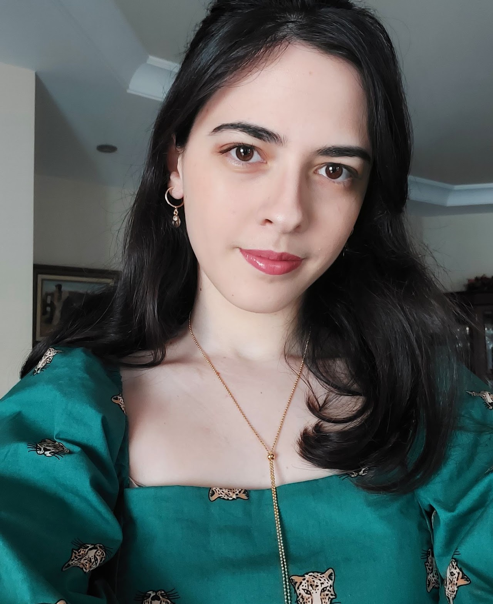
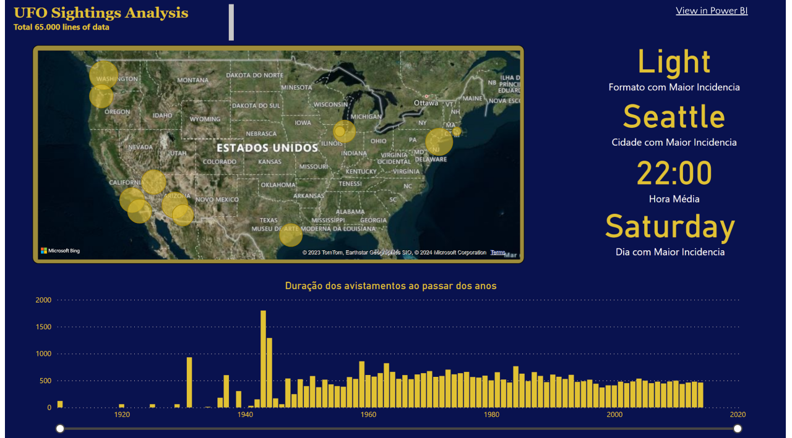
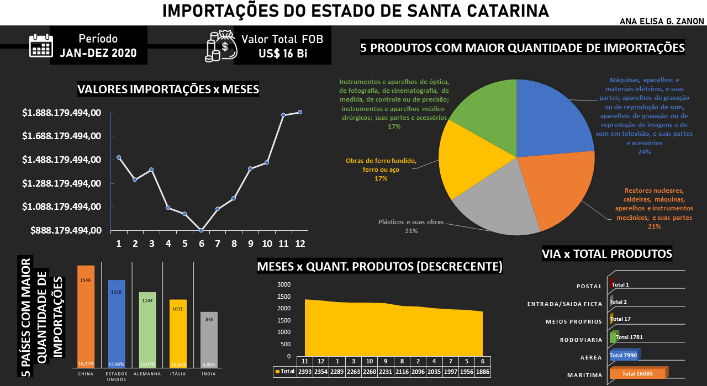
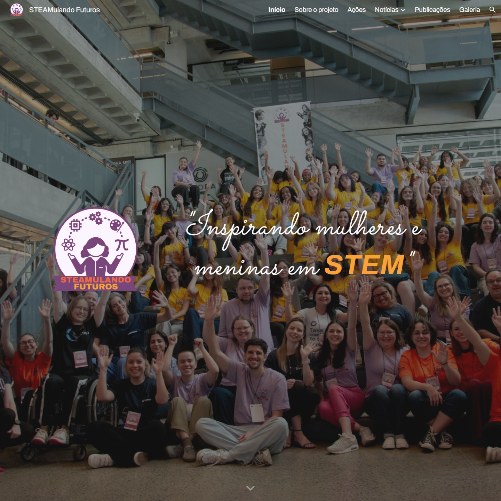
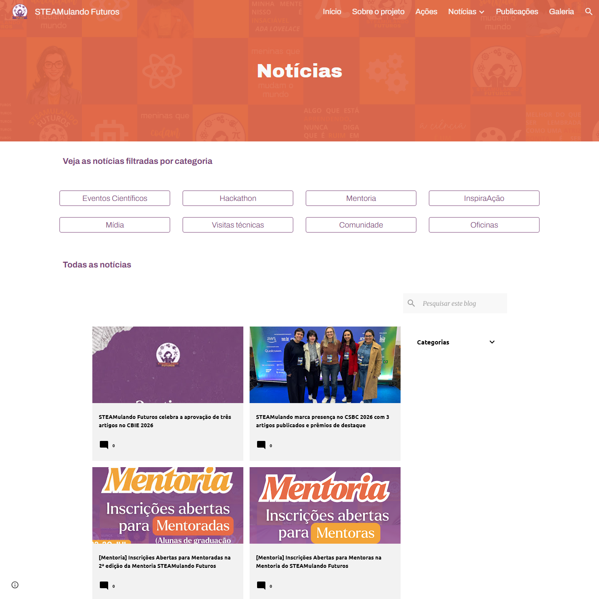
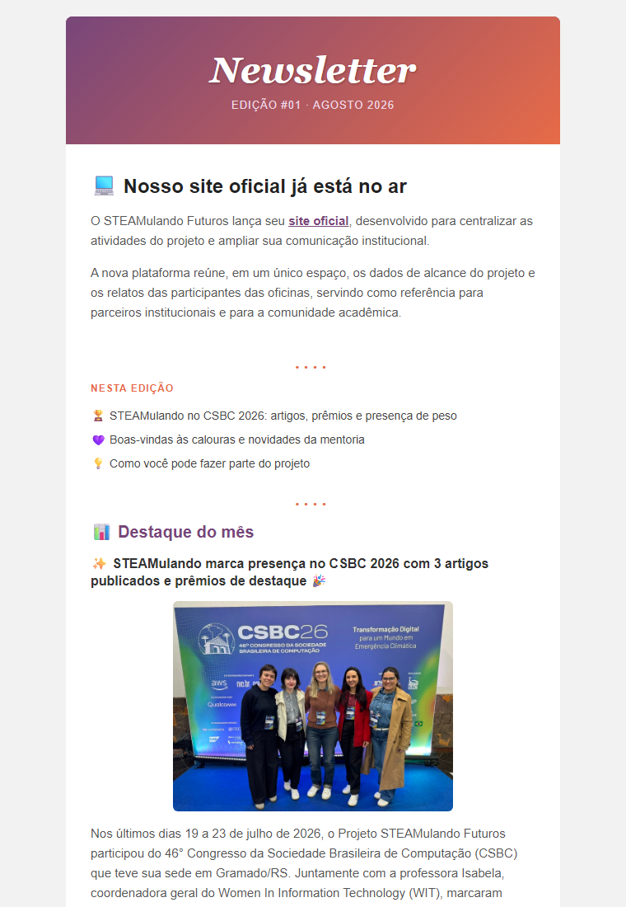
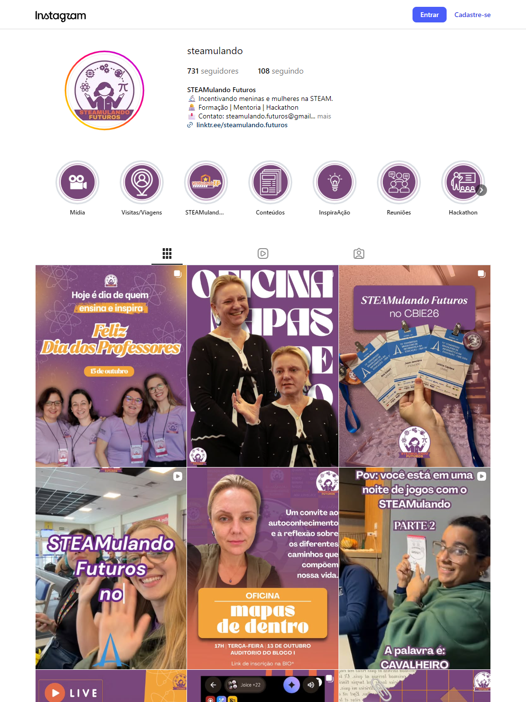

- Joinville, SConde mora e estuda
- Desde 2023na Ciência da Computação
- LinkedIn/in/anaelisazanon

Pesquisa e extensão andam junto: bolsa CNPq no STEAMulando Futuros, aulas de programação no Interagir e mentorias para meninas.
Da odontologia aos dados
Clique nos anos para ver cada etapa.
Dados e projetos
Análises

65 mil relatos de avistamentos nos Estados Unidos: limpeza da base do Kaggle, perguntas sobre dia, hora, cidade e formato, e um dashboard para responder.

Estudo de caso com as importações de Santa Catarina em 2020: tabelas dinâmicas, os meses de maior gasto e os produtos mais importados.
Experiência e projetos
- STEAMulando FuturosBolsista CNPq · desde 2025Comunicação do projeto (site, blog, newsletter e Instagram), artigos científicos, organização das alunas de iniciação científica e criação da gamificação do hackathon para meninas.
- Escritório de Carreiras UDESCBolsista · 2024–2025Dashboards em Power BI com dados de alunos e projetos do CCT.
- Painel Instituto de PesquisaAnalista de dados · 2024Gestão e análise de dados de pesquisas socioterritoriais, em Excel e C#.
- InteragirExtensão · desde 2023Aulas de programação para crianças e gerência do programa em 2024.
- UDATADiretora de projetos · 2023Grupo de estudo de dados da UDESC.
Cursos
- Análise Exploratória de Dados e Métodos EstatísticosUSP · 60h · 2023
- Introdução ao Aprendizado de MáquinaUSP · 2024
- Data Science OrientationIBM · 2024
- IA na SaúdeVII Escola Avançada em Big Data Analysis · 2023
- Trilha Digital Data ScienceSantander Coders · 2023
- Gestão EstratégicaIFSC · 2022




STEAMulando Futuros
Site institucional do projeto, apresentado no 36º Seminário de Iniciação Científica da UDESC. Bolsa CNPq no edital Meninas na Ciência, desde 2025.
Blog com as ações do projeto: oficinas, hackathon e as publicações do grupo, escritas para quem está começando.
Newsletter por e-mail feita em HTML, com as novidades do projeto. A primeira edição, de agosto de 2026, ficou pronta mas ainda não foi enviada.
Gestão do Instagram, com séries sobre mulheres cientistas e tecnologia, divulgação de palestras e relatos de experiência de alunas.
Pesquisa
Publicações sobre meninas e mulheres em STEM: pensamento computacional, divulgação científica e hackathons.
- Desconstruindo estereótipos de gênero em STEMDesign thinking e pensamento computacionalCBIE 2025
- Website do STEAMulando Futuros36º Seminário de Iniciação CientíficaSIC UDESC 2025
- Divulgação científica para mulheresUm olhar voltado às redes sociaisCOTB 2026
- Estimulando inovaçãoUm hackathon para meninas em STEMWIE 2026
- Gamificação centrada no público femininoEngajamento em um hackathon de STEMSBIE 2026